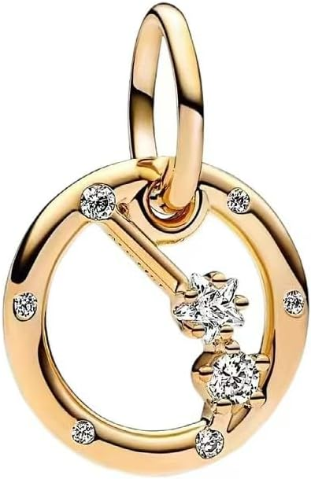

Charm de horóscopo con diseño de estrellas
Charm inspirado en el horóscopo y los signos del zodiaco, ideal para personalizar una pulsera y llevar un detalle relacionado con tu signo o hacer un regalo original.
Desde 11,99 €
Ver en Amazon#publicidad
Pequeños detalles, grandes historias.
Descubre charms de horóscopo de plata de ley 925 para personalizar tu pulsera con tu signo zodiacal. Encuentra diseños de Aries, Tauro, Géminis, Cáncer, Leo, Virgo, Libra, Escorpio, Sagitario, Capricornio, Acuario y Piscis, ideales para representar tu fecha de nacimiento, personalidad o elegir un regalo con un significado especial.
Charm inspirado en el horóscopo y los signos del zodiaco, ideal para personalizar una pulsera y llevar un detalle relacionado con tu signo o hacer un regalo original.
Desde 11,99 €
Ver en Amazon#publicidad

Charm inspirado en el horóscopo con un diseño en tonos rosas, ideal para personalizar tu pulsera y llevar contigo un detalle relacionado con tu signo del zodiaco.
Desde 15,98 €
Ver en Amazon#publicidad

Charm de horóscopo con diseño en 3D, una opción original para personalizar tu pulsera y representar tu signo del zodiaco con un detalle diferente.
Desde 16,81 €
Ver en Amazon#publicidad

Charm inspirado en el horóscopo con un elegante diseño en forma de lágrima, ideal para personalizar una pulsera y llevar un detalle relacionado con tu signo del zodiaco.
Desde 21,63 €
Ver en Amazon#publicidad

Charm inspirado en los signos del zodiaco con un diseño de figuras, ideal para personalizar tu pulsera y llevar un detalle relacionado con el horóscopo.
Desde 11,99 €
Ver en Amazon#publicidad

Charm inspirado en el horóscopo con un diseño de estrellas en tonos azules, ideal para personalizar tu pulsera y llevar un detalle relacionado con tu signo del zodiaco.
Desde 16,99 €
Ver en Amazon#publicidad

Charm inspirado en el horóscopo con un diseño decorado con corazones, ideal para personalizar tu pulsera y combinar el significado de los signos del zodiaco con un detalle romántico.
Desde 22,99 €
Ver en Amazon#publicidad

Charm inspirado en el horóscopo con un diseño de corazón, ideal para personalizar tu pulsera y llevar un detalle relacionado con tu signo del zodiaco.
Desde 6,29 €
Ver en Amazon#publicidad

Charm colgante inspirado en el zodiaco, una opción elegante para personalizar tu pulsera y llevar un detalle relacionado con tu signo del horóscopo.
Desde 26,49 €
Ver en Amazon#publicidad

Charm colgante inspirado en el horóscopo con un diseño en tonos rosas, ideal para personalizar tu pulsera y llevar un detalle original relacionado con los signos del zodiaco.
Desde 25,22 €
Ver en Amazon#publicidad

Charm de diseño redondo inspirado en el horóscopo y los signos del zodiaco, ideal para personalizar tu pulsera con un detalle original y simbólico.
Desde 24,03 €
Ver en Amazon#publicidad

Charm inspirado en los signos del zodiaco con detalles de circonitas, ideal para personalizar tu pulsera y añadir un toque elegante relacionado con el horóscopo.
Desde 18,92 €
Ver en Amazon#publicidad

Charm de horóscopo con diseño colgante y detalles de circonitas, una opción especial para personalizar una pulsera y llevar un detalle relacionado con el mundo de los signos del zodiaco.
Desde 16,80 €
Ver en Amazon#publicidad
Los charms de horóscopo permiten añadir a una pulsera un diseño relacionado con el signo del zodiaco. Son una opción especial para representar una fecha de nacimiento, elegir un símbolo con el que te identifiques o crear una joya personalizada para regalar.
En esta selección encontrarás charms del zodiaco y diferentes diseños inspirados en los signos zodiacales. Puedes elegir el signo que corresponde a tu fecha de nacimiento y combinarlo con otros charms para crear una pulsera o collar con un significado personal.
El zodiaco occidental está formado por doce signos: Aries, Tauro, Géminis, Cáncer, Leo, Virgo, Libra, Escorpio, Sagitario, Capricornio, Acuario y Piscis.
Puedes encontrar un charm signo zodiacal relacionado con tu signo de nacimiento o elegir el signo de otra persona para crear un regalo personalizado. Cada signo puede representarse mediante diferentes formas, símbolos y estilos.
Los primeros signos del zodiaco incluyen Aries, Tauro, Géminis y Cáncer. Un charm Aries, un charm Tauro, un charm Géminis o un charm Cáncer pueden utilizarse para representar el signo de nacimiento de una persona o como parte de una combinación personalizada.
Elegir el signo correspondiente a la fecha de nacimiento permite crear un detalle especialmente personal, tanto para llevarlo en una pulsera como para regalarlo a alguien importante.
También puedes encontrar diseños relacionados con Leo, Virgo, Libra y Escorpio. Un charm Leo, charm Virgo, charm Libra o charm Escorpio puede convertirse en el elemento principal de una pulsera zodiacal o combinarse con otros símbolos.
Los charms de estos signos pueden elegirse por la relación con la fecha de nacimiento o simplemente por el diseño y el significado que cada persona quiera darle.
Los últimos signos del zodiaco son Sagitario, Capricornio, Acuario y Piscis. Puedes elegir un charm Sagitario, charm Capricornio, charm Acuario o charm Piscis para representar un signo concreto y crear una joya relacionada con la astrología.
Los diseños zodiacales también pueden utilizarse como regalo de cumpleaños o para crear una combinación de charms relacionada con la personalidad, los gustos o la fecha de nacimiento de una persona.
Para elegir un charm del horóscopo, lo primero es identificar el signo que quieres representar. Después puedes fijarte en el diseño, la forma, el acabado y los detalles decorativos para encontrar una opción que encaje con tu estilo.
Si vas a regalar un charm zodiacal, puedes elegir el signo correspondiente a la fecha de nacimiento de la persona. También puedes combinarlo con una inicial, un número o un charm del mes de nacimiento para conseguir una joya todavía más personal.
Todos nuestros charms son de plata de ley 925 y están pensados para utilizarse en diferentes tipos de joyería. Son compatibles con marcas principales, pulseras de dijes estándar y pulseras de abalorios de 3 mm.
Además de utilizar los charms zodiacales en pulseras, también puedes llevarlos en collares, creando diferentes combinaciones según tus gustos y el significado que quieras representar.
Una pulsera personalizada puede reunir diferentes símbolos relacionados con una persona. Puedes combinar un charm zodiacal con una letra para representar su nombre, un número para recordar una fecha o un mes de nacimiento para crear una composición más personal.
Descubre también nuestra selección de charms de letras e iniciales, charms de números, charms de meses y piedras de nacimiento, charms de animales, charms de amor, charms de amuletos y símbolos, charms de personajes, charms de ocasiones y hobbies y charms fluorescentes.
También puedes consultar nuestra guía sobre plata de ley 925 para conocer sus características, cómo reconocerla y cómo cuidar correctamente tus charms.
Antes de comprar, revisa siempre en Amazon las características, compatibilidad, variantes, precio y disponibilidad del modelo elegido, ya que esta información puede cambiar según el producto.
El zodiaco occidental está formado por doce signos: Aries, Tauro, Géminis, Cáncer, Leo, Virgo, Libra, Escorpio, Sagitario, Capricornio, Acuario y Piscis.
Lo habitual es elegir el signo correspondiente a la fecha de nacimiento de la persona que llevará el charm. Si vas a hacer un regalo y tienes dudas, puedes comprobar la fecha de nacimiento antes de elegir el diseño.
Es un charm inspirado en uno de los doce signos del zodiaco. Puede utilizarse para representar el signo de nacimiento de una persona o simplemente como un diseño relacionado con la astrología.
Sí. Un charm del horóscopo puede ser un detalle personalizado para un cumpleaños, una fecha especial o cualquier ocasión. Elegir el signo correspondiente a la fecha de nacimiento puede darle un significado especial al regalo.
Sí. Los charms pueden utilizarse tanto en pulseras como en collares. Además, son compatibles con marcas principales, pulseras de dijes estándar y pulseras de abalorios de 3 mm.
Sí. Los charms de nuestra selección son de plata de ley 925. Las características concretas de cada modelo pueden consultarse en la información correspondiente al producto.
Sí. Combinar un signo zodiacal con una inicial permite representar tanto el signo de una persona como la primera letra de su nombre, creando una joya más personalizada.
Sí. Puedes combinarlo con letras, números, meses, animales, símbolos de amor y otros diseños para representar diferentes recuerdos, fechas o aspectos personales.
Sí. Los precios, las variantes y la disponibilidad pueden cambiar en Amazon. Por ello, es recomendable comprobar siempre la información actualizada en Amazon antes de realizar una compra.